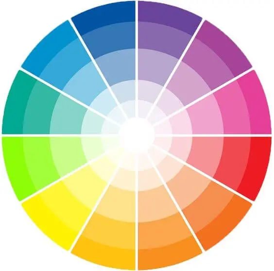
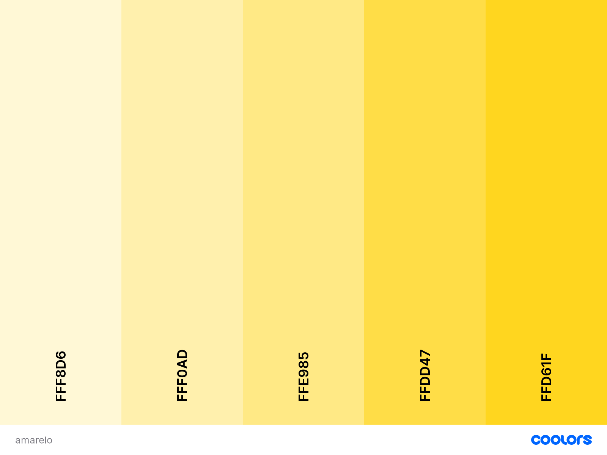
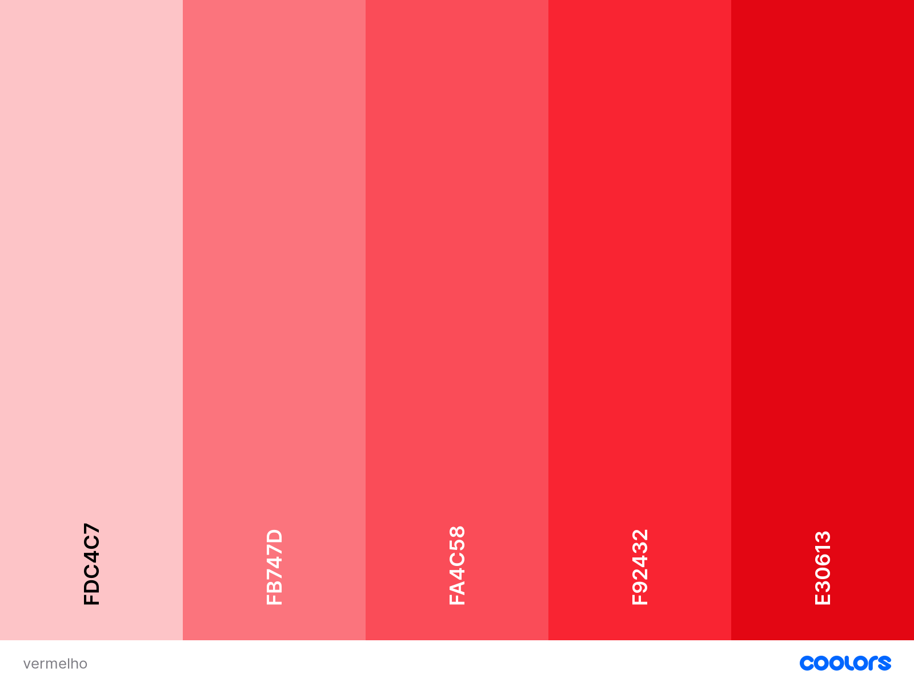
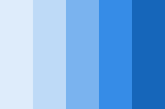

Vamos começar pelo circulo cromatico
-
Amarelo
-
Vermelho
-
Azul
-
Laranja
-
Verde
-
Violeta
-
Laranja Amarelado
-
Laranja Avermelhado
-
Violeta Avermelhado
-
Violeta Azulado
-
Verde Amarelado
-
Verde Azulado

Tipos de Combinações
Complementares
- Amarelo + Roxo
- Laranja + Azul
- Verde amarelado + Roxo Avermelhado
Análogas
- Amarelo + Laranja + Verde
- Azul + Roxo + Roxo Azulado
- Verde amarelado + Verde + Verde Azulado
Análogas + Cpmplementares
- Amarelo + Roxo + Roxo Azulado + Roxo Avermelhado
- Laranja + Azul + Azul Esverdeado + Azul Avermelhado
- Verde amarelado + Roxo Avermelhado + Vermelho + Roxo Azulado
Análogas Relacionadas
- Amarelo + Verde + Verde Azulado
- Laranja + Vermelho + Roxo Avermelhado
- Verde amarelado + Verde Azulado + Azul
Cores intercaladas
- Amarelo + Laranja + Vermelho
- Laranja + Vermelho + Roxo
- Verde amarelado + Verde Azulado + Roxo Azulado
Cores Triádicas
- Amarelo + Vermelho Azul
- Laranja + Roxo + Verde
- Verde amarelado + Roxo Azulado + Laranja Avermelhado
Combinação "Quadrada"
- Laranja + Roxo Avermelho + Azul + Verde Amarelado
- Vermelho + Roxo Azulado + Verde + Laranja Amarelado
- Verde Azulado + Roxo + Laranja Avermelhado + Amarelo
Combinação "Retangular"
- Laranja + Vermelho + Azul + Verde
- Vermelho + Roxo + Verde + Amarela
- Verde Azulado + Roxo Azulado + Laranja Avermelhado + Laranja Amarelodo
Monocromatico
- Variação da cor amarela em seu matiz 100% (Oque esta no cirlulo cromatico) Até seu tom mais claro, chegando ao branco

- Variação da cor Vermelha em seu matiz 100% (Oque esta no cirlulo cromatico) Até seu tom mais claro, chegando ao branco

- Variação da cor Azul em seu matiz 100% (Oque esta no cirlulo cromatico) Até seu tom mais claro, chegando ao branco
